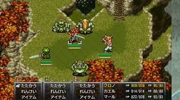

ゲームタイトル:クロノトリガー
コメント
1995年にSFC（スーパーファミコン）用で、20年以上昔に発売されたゲーム。
ドット調のRPGで、過去、現代、未来をわたり、時空を越えて冒険するというストーリー。王道的な内容だが、。クリア後の要素は特にないが、マルチエンディング方式なのでがっつりストーリーを楽しみたい人におすすめ。
戦闘は、FF（ファイナルファンタジー）のようなリアルタイム方式だが、FFよりは簡単に操作できたし、BGMが神がかり過ぎて臨場感すごかった。
移植版で、DSやスマホやPCでもできるので気軽に始めやすいかも。